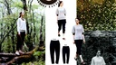
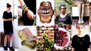
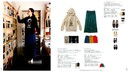
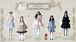
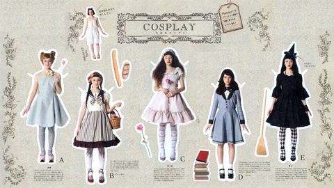
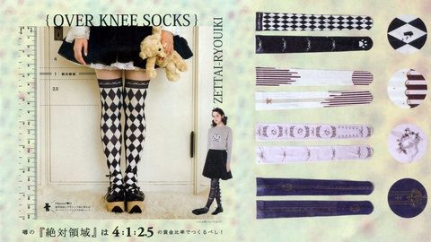
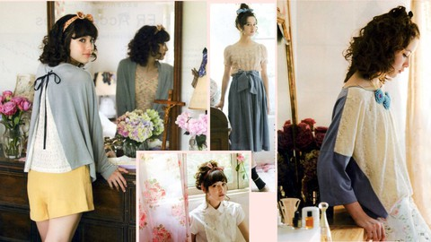
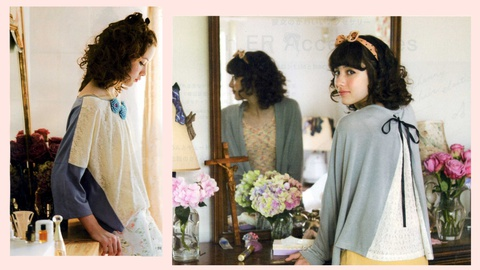
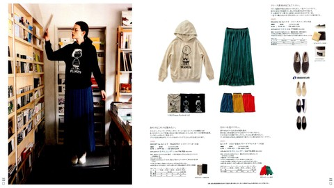
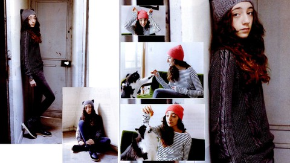

壁紙化：「haco. vol.36」
壁紙づくりのために、アヤしいオッサン(私)が深夜、コンビニで立ち読みして選んで買ってきたファッション誌の『haco. vol.36』をスキャンし、その素材を組み合わせて壁紙化した。



ここに画像を貼付することは「引用」の範囲に留まると私は思っているが、壁紙として日常的に使用するとなるとそういう言い方は難しいかもしれない。壁紙をダウンロードする場合は、商品の購入を私は求める。雑誌で手に入りにくいことを考慮すれば中古で手に入らないなら最低でも最新号の購入はして欲しいところ。(もちろん、原著作者に別のどこかでいいと言ってもらってるなら、何ら問題はない。仮に、私の「編集著作権」みたいなものが生じていたとしても、それは放棄する。) なお、この個別ページは検索よけのメタタグを設定しており、検索よけしてないブログトップやカテゴリトップでは、本体へのリンクのない極小画像しか表示されない配慮をしている。その上で、できるだけ公式なサイトへのリンクをし、ブログ主本人によるリファラ付きのクリックを一度はしている。(これらの点について《デスクトップ壁紙公開についてのこのサイトのポリシー》で少し詳しい説明をしてある。) ここより下に貼ってある縮小画像をクリックすると、大きな壁紙がダウンロードされるはず。(一日100枚以上のダウンロードがあったあとなど、しばらくダウンロード用リンクが停止されることがあります。そうなっていたら、すみません。) なお、添字的な数字の抜けがあったりするのは、バージョン違いなどで、公開していないものがあるというだけのこと。 ■経緯 私は以前から、無機的な壁紙のほかに、アニメ・ゲーム系の壁紙を使っていて、そういうオタク系の中にはコスプレした女性のものもある。壁紙を増やそうとしたとき、いわゆるグラビア系のものも欲しいな…と思ったのだが、ネット上のを保存した手持ちの CG の中には、壁紙にするには難しいものしかない。露出度が大きかったり、縦型であったり。何より、公開することまで考えると、権利面…肖像権にまったく金を払ってないことが気にかかった。 何でこんな露出度の高いものしかないかと考えれば、私が持ってるデータは男性を集めようとするサイトから取ってきたものだからだろう。だから、あえて女性が求めるようなデータを漁ろうとすれば「ファッション」誌か。…とあたりをつけ、コンビニに偵察に出かけた。 深夜にアヤしいオッサン(私)がファッション誌を次々に手にとって立ち読みすると、ティーン向けは衣装はカワイイのだが、文をかぶせたりページに写真を詰めこんだりする「工夫」が壁紙には不向きで、一方、上の年齢層を狙う雑誌の中にはちょうどいいグラビアがあるが、値段が少々高い。値段が安いのは通販雑誌っぽいものだが、これじゃあ…と二・三誌パラパラみると、これが結構私の趣味にあう。中でも気に入って買ってきたのが、フェリシモ社の『haco. vol.36』だった。男物も含め、ファッション誌を買ったのははじめて。 ネットで雑誌のバラし方などを調べ、アイロンで背ののりを溶かし、ページごとにバラバラにする。それをずっと以前に買った古いカラースキャナで一枚ずつスキャンしていった。300ページ近く、すごい面倒くさい。「自炊」って今みたいな自動ページ送り付きスキャナがなく私の古いスキャナと同じようなのを使うしかない時代にもあったんだけど、みんなこの作業をこなしてたのか…。 ただ、やはり値段相応の紙質ということなのか、それとも古いスキャナの性能の問題なのか、スキャンしたものは裏が映ったりしてあまりキレイにはいかない。ネット上で、雑誌スキャンしたものとかたまに見るが、あんなふうにはできなかった。壁紙にするときは、スキャンしたものより縮小するので、多少目立たなくはなったが、公式がデジタルデータを提供してくれればもっとキレイにできるのに！と歯ぎしりしてしまう。 ■ナチュラル系 haco. はだいたいグラビアっぽい写真の横に商品紹介がある。上は、何ページかで続く一連のグラビアを一枚の壁紙にした感じ。上のほうにあるアクセサリは、元はページを渡ってあって、それを複元したかったのだが、うまくいかなかった。 上のは、複数の写真を並べた一ページ分の縦長のページを、その雰囲気をできるだけ残して、横長にしようとしたもの。数が足りなくて、別のページにたぶん同じ人の写真があったので、それを一・二枚、持ってきた。 ■コスプレ系
この号の最後のほうに、物語コスプレ風の衣装を並べた特集みたいなのがあって、それも縦長だったのだが、それを横長のページにできるだけ雰囲気を保って配置した。
その物語コスプレの特集みたいなのの最後がニーソックスの紹介で、ちょっとしたユーモアがおもしろく、上はそれを横長のページにできるだけ雰囲気を保って配置しようとした。 ■お菓子系
これも他のページとは違う独立した特集ページで、その写真が全部良かったので、詰めこもうとしたんだけどゴチャゴチャしたものになってしまった。一番、右の写真とか、実は商品説明が写真にかぶってる部分があったんだけど、それを GIMP のレタッチ機能とかを駆使して、かぶってないような感じになるよう復元…というか、ゴマかしてみた。
ゴチャゴチャしたのが気になって、あえて、二枚を大きく使ってスッキリさせたのが上になる。ただ、右に来た写真、上のを左右反転し、商品説明を他の写真を使って隠してたのを削って大きくしたのだけど、そのためスキャン時に裏映りした文字が目立つようになってしまった。 ■ベーシック系
今回の中だと、壁紙としては、自分の中では一番うまくいった感じ。縦長なのを商品説明を削って無理に横長にする…というのではなく、商品説明付きの見開きページのレイアウトをほぼそのまま、サイズだけを合わせた感じ。元のプロがやったレイアウトに一番近いのが、一番ピッタリくるのは当然かな？
これは配置に苦心して、今でもモヤモヤが残る一枚。一番左の立ち姿が気にいったんだけど、元はかなり縦長で、下のほうに商品説明との重なりがある。ニャンとやってるのも気に入ってそれも活かしたかったが、なかなか気に入った配置にできない。迷った末に余白をあえて残したり、写真を一つだけ小さくしたり…。ちなみに、このモデルの子、この前、テレビ CM でおもちゃの剣振ってるのを見かけた気がするんだが、似た別人か？ ■おまけ 実は、ファッション誌に興味を持ったのは、壁紙づくりの少し前に買った「ガルモ」こと『わがままファッション GIRLS MODE よくばり宣言！』という女の子向け Nintendo 3DS のゲームの影響もある。 私は、ゲームキャラにコスプレをさせた写真を何度か、ここの記事(参：フィギュア写真のカテゴリ)にしていて、着せかえが結構楽しいという自覚はあったが、着せかえがメインのゲームははじめて。ネットプレイで、人のコーデ (コーディネイトの略)を見るのも楽しいし、何より自分のコーデに反応があるのが楽しい。 ショップコードや店名も書いちゃうと…。 店長名: ジルパ ショップ名: L.Tyre ショップコード: CNG132549 店長名の「ジルパ」ちゃんは、「JRF」に適当に母音や鼻音を足しただけ。たまたまそのころ読んでいたイザヤ書でテュロスが出てきて、店名をリトル・テュロスな感じで L.Tyre にした。アバターの姿(↓)はもちろん私とは全々関係がない。本人の似姿と誤解されないよう、外人っぽいというかアニメっぽいというか、そういう感じにワザとしている。 アバターは、髪型や髪の色は一番左のものを基本としてできるだけ変えないようにしている。メイクは、面倒というのもあるし、メイクの理屈がわからないというのもあってあまり変えてない。 更新：2014-01-29 初公開：2014年01月29日 21:04:32 最新版：2014年01月30日 18:13:55
Trackbacks: 《「ガルモ」＆「モンハン４」ジルパちゃん写真集》 from JRF の私見：雑記 最近、ゲームのやり過ぎだったので、しばらくニンテンドー 3DS を封印してるが、そこまででハマっていたのが、「モンハン４」こと『モンスターハンター４』(カプコン)と「ガルモ」こと『わがままファッション GIRLS MODE よくばり宣言！』(任天堂)だった。 特にモンハン４のほうは 500時間以上やってて、《モンハン４の近況》として《ひとこと》に特設エントリを作ったぐらい。ソロが長いので、サポート... 受信： 2014-02-10 03:17:57 (JST) Links: haco. vol.36: http://www.amazon.co.jp/dp/4894326892 デスクトップ壁紙公開についてのこのサイトのポリシー: http://jrf.cocolog-nifty.com/column/2013/09/post.html フェリシモ社: http://www.felissimo.co.jp/haco/ わがままファッション GIRLS MODE よくばり宣言！: http://www.nintendo.co.jp/3ds/aclj/ フィギュア写真のカテゴリ: http://jrf.cocolog-nifty.com/column/cat5351378/?mode=long
後方参照 (2 件)
- URL参照 「ガルモ」＆「モンハン４」ジルパちゃん写真集 2014年02月10日 03:17:14
- URL参照 壁紙化：「moecco vol.31」 その１ 2014年02月01日 12:28:44